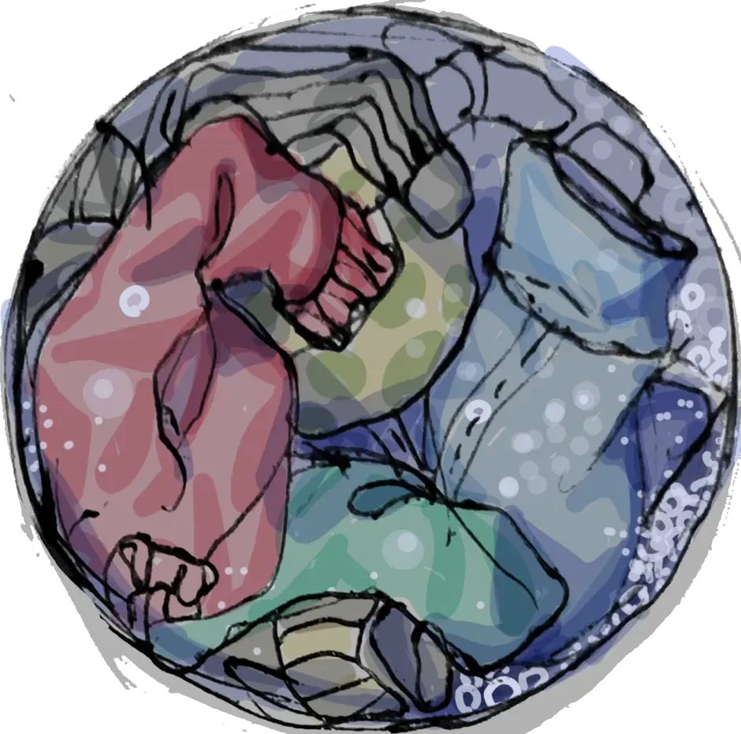
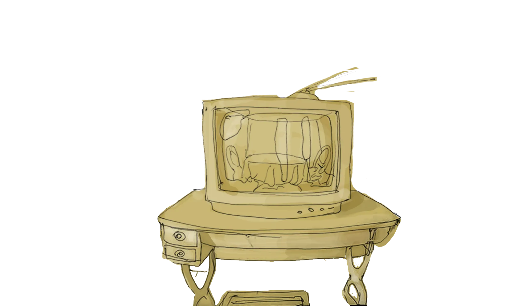
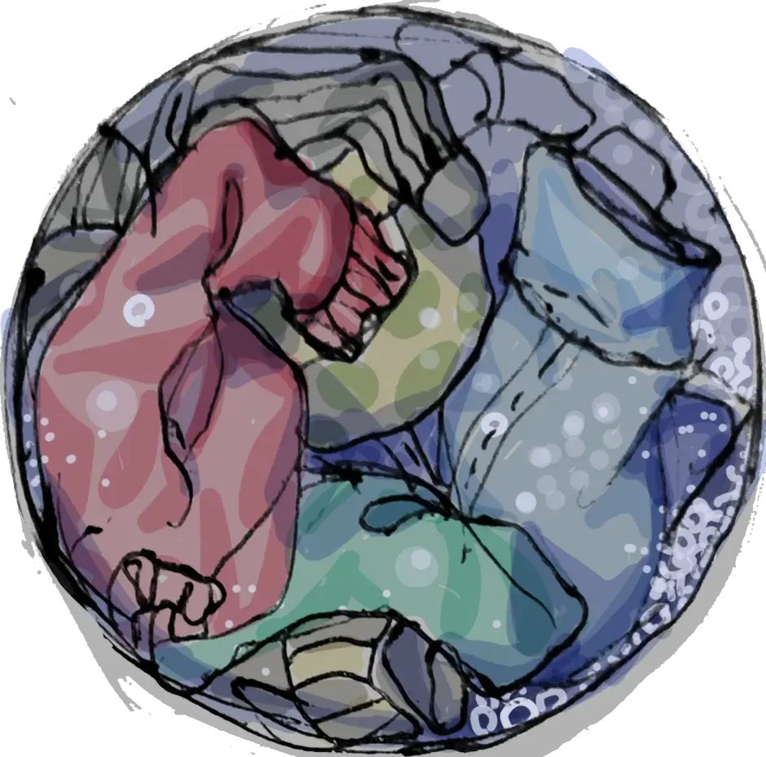
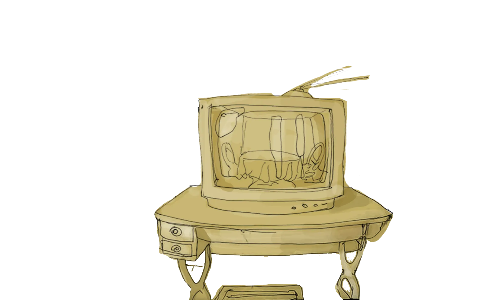
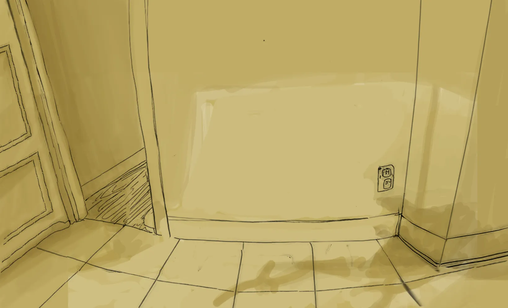
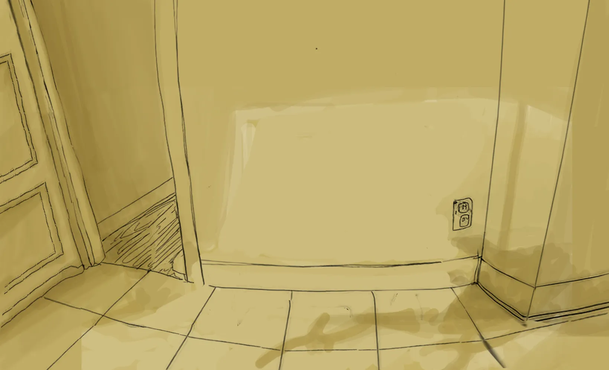

1. I dreamed with a washing machine.
A flying washing machine. And the machine was smiling, as it has a face,
and eyes and a mouth and all the general things that children draw when they are required to portrait a face at an early age. Early age children, I mean.
And the machine was smiling, at me, and saying: " I will wash you". The horizon was of a foggy turquoise tint
And I asked, Washing me? Washing me from what? Or why? sweating and almost shouting, as the machine look heavy and menacing flying over me;
without answering my questions, it smiled again and slowly disappeared in the green fog.
The clock rang strenuously, as alarm bells do. The metallic tingling trembling around my head,
already drowned deeply inside the unapologetically disordered pillows.
What is this? What is this? I say without muttering a word.
The light entered already by the curtain edges.
Oh come on, another day to work.
" I am glad you have a work" , the uncle has said one time. I guess, he is right.
And I am wrong.
2. Lets buy a washing machine.
A-Lets buy a washing machine. It is just about time
B-Do we have enough for that? What model?
A-scream in the background, also a song on the radio
A-Indeed we have I guess, about the model...how would I know? Am I a salesman? we will see there, at the store
B-Yeah, you are right, neither a salesman, nor a poet, what are you? .... Hey!, did you heard?
A-What?
B-The artist's inspiration, over there, next to the toasting machine.
A-Ah, that, well, no. Anyway, lets buy a washing machine
B-Yeah, you are right. What is art, anyway?
A-What are you talking about? Come on, get ready and lets go. By the way the bill for the rent arrived yesterday, but late.
Water, electricity are done. It is the only one pending.
The machine must be a little thing, not childish not a cadillac, for us to put it here (pointing to a space) without much suffering
( I remind this in the newspaper articles: "without much fanfare, they say")
B- Bla bla bla, we will sort it out. Lets go. MOVE. Give my hat.
A-OK, OK Oh, yes sure.
You know, the washing machine work going round and round
it is an interesting piece of machinery, I think. Somehow, like ur lives, sometimes.
B Weeellll....I like one with a sleek design, a la Bauhaus
A Mmm lets buy it. Do you check the kids before coming?
B Oh, dont remind me of them now, please/


3. The woman, the man and the washing machine.
A cartel:
The washing machine over the altar of technology.
You just need to press one button
-Very well, here we are, let see all the marvels around here
-But lets do it quickly, or we will find ourselves out of time
-Okkkkkk
-Did I tell you my dream?
-No, not today. Did I tell you mine?
-Well...no
-Lets keep it that way, then.
-But...
-Look! this is nice! so nice! do you like it? Of course you do,
who wouldn't?
Such a glamour, such an harmony,such creation....excuse me! excuse me! -calling the sales attendant
C-(What now? It is half morning and I am already tired. I will sell this, I need a comission today)
Yes, how can I help you?
4. The girl listening the radio
- Did you heard the news?
-No, not yet, what is that about?
-Shhhh I am listening...
-Ah OK
The radio blurbs and blurbs, unintelligible sounds and then Maria Callas is singing in a kind of morse code, but sung. Then, silence.
-How many epochs are we yet? I keep checking all these images again and again, and everytime I keep finding new details. They will serve me well. However I fill; the tension in the flow. Hahaha, that is a good one! nevermind, lets keep checking this one...
-Shhhhhhh
-Shhh what? it is already silent!
-You know nothing,! shhhhhhhhhhhhhhh
-Bah - keeps checking the papers
5. the man falling, over the floor, trying to walk, with difficulty.
The path he lefts forms the shapes similar to the pattern number 4 you can see in the attached sheets, while a cartel with electric bulbs form the letters of the text4, also in the aforementioned document.
-Hey! Hoi! I hear my own scream, the rant, the rage!
-Why?
-Only then I started to understand why you did that
-Never mind
-Oh yes , sure
- Why then, to spread the letters over the edge of the abbyss, and not inside it?
- Just because, or more precisely, to linger over the ambiguity, the uncertainty, the menace and the future, whose presence is always at the reach of the hand, perpetually coming, yet not here
-What? bah Take your flowers and hands of the scene
(she opens the mouth and flowers appear)
-Great.
Moment 5. (corrected, edited, repeated and distorted)
A-You always help her, right?
B-Well, yes , I guess.
C-Do we need this?
A-Yes. My phone is not catching the signal. I can't post anything it seems...oh , now is working, what you were saying?
C-I like that one, wiht the pearl chains
A- Oh wait, don't look my feed! Anyway, still is not that we can go out now.
C-Oh, I see.
B-I only have seen your eyes, like, ever. Do you have a picture from before?
C-Yes, but I am not that person anymore
A-Who is?.
B- Sing me a song, then. Cheers for the truth! Whatever that means!
(She sings). That's it.
Moment 6 ( the only real)
Outside, the machines flying. The dissonance.
The sound. The guitar and the bottle and the radio and the sound.
The darkness.. The man is in a bubble, the woman is in a bubble, the girl is in a bubble, from her a tree grows, and they scream, but the scream make the bubbles tremble and they shut up; the time keeps going on and hours pass, and they keep silent until the sun sets.
// JavaScript Document /*Sure, yes, I can explain it, are you recording yet? Well, OK. Mmmmm....The plan is, was, the next for mobile-first will appear the cover, a div, styled simply, arial and black text over white or gray background, with the title-why I have to do this? hey, it could be worse! ok, yes, true-the aim of the work and technical details, when you click, it dissapear- an event listener (listen! listening a listener! you see? hahahaaaaaaa) on this div to change the css display from block to none will suffice;-I hate talking to the camera - the first moment appears one button in the middle of the screen, a simple one, geometric, en svg, then appear the top menu, I think? , well yeah, and the bottom menu only, those menus have to be semiopaques, when you press the top menu,- oh my, (*-*) I hate social media, but I confess I have FOMO - the options come from the top of the screen to the middle, and they will show five options, and , well, these options will change the content of the main screen-I want to finish this, YOLO- , well, making appear and disappear a group of two divs; one full of text, and the other showing an animated SVG-here we should use GSAP then appear also the charts, the image of the family becomes black, grey or coloured according to the options pressed What? what are these options? I don't know, I guess every option will have two divs that will have scrollytelling. Yes. Like that. Yes. I am tired. __________________________________________________________________ idea 1: this could be about technology, the characters are drawn in this magazine naive style, they will be floating, the husband, the wife, and the girl, as well as the washing machine, the radio, the TV, the words of the novelist will appear as they appear in scrollytelling, create two layers one pined with scroll triggers, and the other a normal flow, this will happens with every click, there could be three moments, when they, the persons, are floating, when the machines are falling, and when they see the machines. I could call this "The song of the washing machine", could be about finding an ideal solution, with just pressing a button, but then thing that were simple go wrong, the style will be therefore clean and smooth and commercial, we will explore here commercial image templates, trying to do so in an ironic way, that is the hook for me, manipulating these formats, along that I will try to create a narrative, maybe necessary to a possible spectator. I think. (bla bla bla TLDR).


 




 
